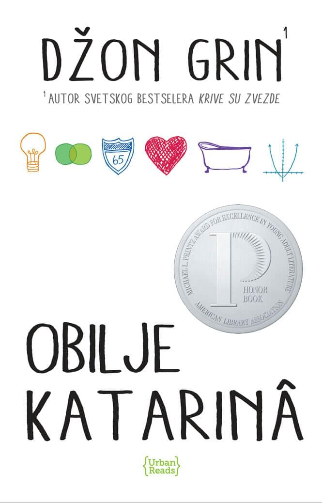

Gradovi na papiru

Kventin Džejkobsen citav život provodi posmatrajuci ocaravajuce živahnu Margo Rot Spigelman i voleci je izdaleka. Zato bez reci krene za njom kada mu jedne noci zakuca na prozor obucena kao nindža, pod izgovorom da ga vodi u savršeno isplaniranu osvetnicku akciju.
Nakon te nezaboravne zajednicke noci, Margo Rot Spigelman nestaje iz grada, ostavivši Kjuu tragove za koje on veruje da ce ga odvesti ka njoj…
Autor: Džon Grin
Cena: 899.00 din
Naivan. Super.
Naivan. Super. je drugi roman kultnog norveškog pisca mlade generacije, Erlenda Lua, koji mu je doneo svetsku slavu. Preveden je na dvadesetak jezika i izvanredno su ga prihvatili i citaoci i knjinevna kritika.Nepretenciozna, topla, poeticna i zabavna prica u kojoj glavni junak (25 godina) sam u stanu svog brata razmišlja o smislu života, analizira stvarnost i protok vremena, preispituje sebe i svoju prošlost. Lu nesvakidašnje originalno kombinuje jednostavan jezik i vrlo ozbiljne teme. Ocaravajuce emotivna i duhovita, knjiga Naivan. Super. u isto vreme je i autobiografija, komedija, parabola, romansa i filozofska rasprava. Lu sa neverovatnom lakocom ruši sva pravila, tako da nam se na kraju romana cini da sva ta pravila nikada nisu ni postojala.Ovo je jedna od onih knjiga zbog kojih mladi zavole književnost.
Autor: Erlend Lu
Cena: 551.65 din
Previše srece
Deset novih pripovedaka vrhunskog stila i umeca od dobitnice Men Buker nagrade za 2009. godinu.
Više nego ijedan pisac posle Cehova, Alis Manro ima cilj i ostvaruje ga, ona ostvaruje gestalt kompletnost u prikazivanju života. Oduvek je imala genijalni dar za razvijanje trenutaka epifanije i rasplitanje njihovog sadržaja. Trenuci za kojima traga u pripovedanju nisu više oni u kojima protagonistkinja dolazi do nekog uvida; sada su to momenti u kojima se ostvaruje sudbinski, neopozivi, dramaticni cin. Za citaoca, to znaci da ne može da razmišlja o znacenju pripovetke sve dok ne isprati svaki preokret zapleta i da ce sijalica da mu se upali tek na poslednjoj stranici.
Autor: Alis Manro
Cena: 1028.50 din
Vil Grejson, Vil Grejson

Jedne hladne veceri, u najneocekivanijem kutku Cikaga ukrstice se putevi dvojici imenjaka i prezimenjaka. Kako im se svetovi budu prožimali, životi dva Vila Grejsona krenuce u sasvim novom pravcu, vodeci ih ka romanticnom raspletu tokom izvodenja najvrcavijeg mjuzikla u istoriji srednje škole…
Autor: Džon Grin
Cena: 899.00 din
Biblija otrovne masline

Biblija otrovne masline je prica koju pripovedaju supruga i cetiri kceri hrišcanskog propovednika koji ih vodi na misiju u Belgijski Kongo 1959. godine. Sa sobom nose ono što smatraju da ce im biti potrebno, ali ubrzo ce shvatiti da ih u Kongu ocekuje mnogo toga za šta nisu bili pripremljeni. Citava porodica upada u vrtlog istorijskih dogadaja koji ce se prelamati kroz njihove živote. Ono što sledi jeste uzbudljiva saga o propasti i oporavku koja se proteže kroz tri decenije, roman koji spaja nesvakidašnja iskustva sa starozavetnim ritmovima prorocanstava i prokletstava, prica koja je od bodljikavih niti religije, politike, rase, greha i iskupljenja izatkana u zastrašujucu lepotu.
Autor: Barbara Kingsolver
Cena: 1019.15 din
Prednosti jednog marginalca

Prednosti jednog marginalca je prica o Carlijevom stasavanju i neverovatnom putovanju kroz neistražen svet srednje škole u koji je upravo zakoracio. O prvim ljubavnim sastancima, porodicnim dramama, velikim i iskrenim prijateljstvima, seksu, drogama, ali i ljudskim karakterima. Ovo je vodic kroz intimnu istoriju pop-muzike, gde od prve stranice odzvanjaju carobne note Bouvijevih Heroja, Cocteau Twins-a, Sonic Youth-a, New Order-a, i, pre svega, The Smiths-a. Jedna od onih „feelgood” knjiga od kojih vam osmeh ne silazi s lica cak i kada obraduje najozbiljnije probleme kroz koje adolescenti prolaze u svom odrastanju – stazi koju niko ne prode dva puta, i koja uvek podrazumeva neizvesnu avanturu.
Autor: Stiven Šboski
Cena: 561.00 din
Obilje Katarina

Ako cemo o vezama, on ima samo jedan tip devojke – svaku koja se zove Katarina. Ako cemo o devojkama koje se zovu Katarina, sve redom su ga šutnule. Devetnaest puta, da budemo precizni. Kolin Singlton, cudo od deteta, otiskuje se na put da se pozabavi Teoremom Katarinske Predvidivosti, uz pomoc koje planira da anticipira buducnost svake bogovetne veze, da osveti ostavljene i pronade onu pravu…
Autor: Džon Grin
Cena: 899.00 din
Farenhajt 451
Gaj Montag je vatrogasac. U njegovom svetu dominira televizijski program, literatura je „vrsta na ivici izumiranja“, a vatrogasci cešce raspiruju vatre nego što ih gase. Njegov posao je da uništava najilegalniju robu – štampane knjige, a zajedno s njima i kuce u kojima su skrivane.
Montag je zadovoljan svojim poslom i nikada se nije zapitao o posledicama toga što radi. Svakog dana vraca se kuci svom jednolicnom životu sa ispraznom suprugom Mildred koja dane provodi u društvu svoje televizijske „porodice“. Sve dok ne upozna mladu Klaris koja ce mu pricati o prošlim vremenima kada ljudi nisu živeli u strahu i kada su smeli da imaju svoje ideje umesto onih koje propoveda televizija.
Nakon što Mildred pokuša da se ubije, a Klaris nestane, Montag ce poceti da preispituje sebe i svet u kojem živi. Poznanstvo sa profesorom odmetnikom preokrenuce njegovu sudbinu.
Autor: Rej Bredberi
Cena: 799.00 din
Zov Kukavice

Kad problematicna manekenka padne sa snegom prekrivenog balkona jedne palate u londonskom Mejferu, svi zakljuce da se ubila; svi osim njenog brata, koji se za pomoc obraca privatnom detektivu Kormoranu Strajku. Strajk je ratni veteran, covek sa ožiljcima na telu i duši, u cijem životu odavno nema više ni reda ni poretka. Preuzimanje slucaja pruža mu materijalnu sigurnost, no zauzvrat ce morati da plati mnogo vecu cenu: što dublje zadire u misteriozno ubistvo, sve su mracnije tajne koje ga okružuju, preteci da i njega progutaju.
Autor: Robert Galbrajt
Cena: 776.05 din